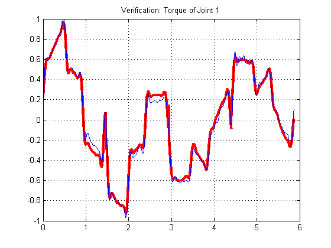
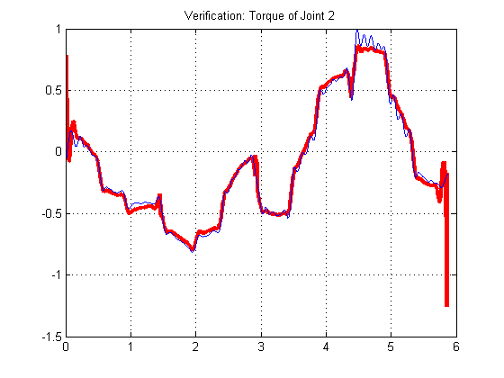
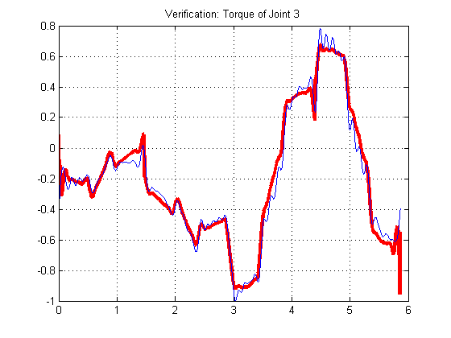
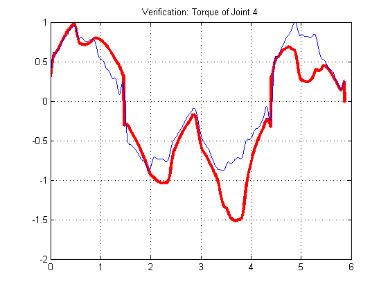
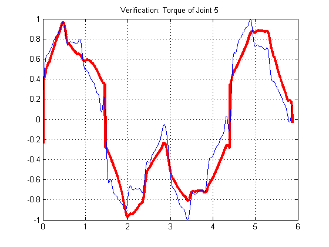
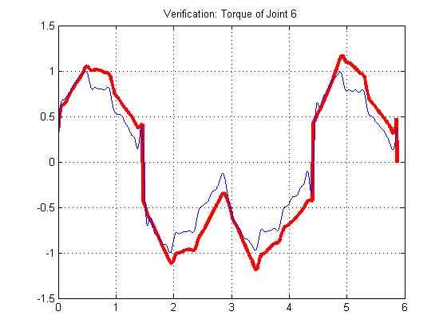

%%%%%%%%%%%%%%%%%%%%%%%%%%%%%%%%%%%% %@Copyright(c),Googol Shenzhen Tech. Ltd %@File Name: EfDynVfyActData.m %@Author: Dai Dan %@Version: 1.0 %@Date: 11/03/2014 % %@Description: To do dynamic verification for Efort Manipulator %%%%%%%%%%%%%%%%%%%%%%%%%%%%%%%%%%%%% clear all; clc; IniEnc =[109824;-2846557;-2698244;19752;-4211310;-6879]; %To ensure the same for different sampling I2T = [0.73;0.73;0.5;0.4;0.4;0.39]; Gear = [-147;-153;153;-76.95;-80;-51];
IniJnt=[0;-pi/2;0;0;pi/2;0]; EncRes = 32768*4; D2R = pi/180; R2D = 180/pi; VelThre = [0.15,0.15,0.15,0.15,0.09,0.09]; Delta=[0.33 0.33 0.33 0.33 0.33 0.33]; %sctParam=load('EfIdndOptNmlNf1.mat'); %sctParam=load('EfIdnCndNmlMf1.mat'); %sctParam=load('EfIdnCndNmlLfOpt1.mat'); % sctParam=load('EfIdnCndNmlLfOpt0318_1.mat'); %sctParam=load('EfIdnCndNmlNfMixDel2.mat'); % sctParam=load('EfIdnCndNmlSfMixDel1.mat'); sctParam=load('EfIdnCndNmlPriorFriMix1.mat'); Param=sctParam.IdnParam; % File='C:\Users\DAI Dan\Desktop\Learn\Dynamic Control\New Page\Experiment\20150306\ValidTrj1\ValTrj1.txt'; % SmpT = 31.25*230*1e-6; % File='C:\Users\DAI Dan\Desktop\Learn\Dynamic Control\New Page\Experiment\20150306\ValidTrj1\ValTrj2.txt'; %%%For Cnd Identification % SmpT = 31.25*180*1e-6; % File='C:\Users\DAI Dan\Desktop\Learn\Dynamic Control\New Page\Experiment\20150306\ValidTrj1\ValTrj3.txt'; %%%For dOpt Identification % SmpT = 31.25*180*1e-6; % File='C:\Users\DAI Dan\Desktop\Learn\Dynamic Control\New Page\Experiment\20150306\ValidTrj2\ValTrj50.txt'; % SmpT = 31.25*180*1e-6; % File='C:\Users\DAI Dan\Desktop\Learn\Dynamic Control\New Page\Experiment\20150306\ValidTrj2\ValTrj100.txt'; % SmpT = 31.25*150*1e-6; File='C:\Users\DAI Dan\Desktop\Learn\Dynamic Control\New Page\Experiment\20150306\ValidTrj2\ValTrjH.txt'; SmpT = 31.25*110*1e-6; %%%%%%%%%Efort Parameters%%%%%%%%%%%% %%%%%%%%%%%%%%%%%% DH=[0 0 0 504; -pi/2 170 -pi/2 0; 0 780 0 0; -pi/2 140 0 760; pi/2 0 0 0; -pi/2 0 0 0; 0 0 0 125]'; DH(2,:) = DH(2,:)/1000; DH(4,:) = DH(4,:)/1000; Ld=[504 170 780 140 760]/1000; Bd=EulerBasis(Ld); fLd=[566 150 870 170 1016]/1000; fBd=EulerBasis(Ld); [Param_n,rParam_n]=EfDynCAD(); [fParam_n,frParam_n]=FanucDynCAD(); gr=9.8; %%%%%%%%Data Processing%%%%%%%%%%%%% d=fdesign.lowpass('Fp,Fst,Ap,Ast',0.05,0.1,1,75); Hd = design(d,'equiripple'); Data=importdata(File); for i=1:6 oTrq(:,i)=Data(:,3*i-2)*I2T(i)*Gear(i); Trq(:,i)=filtfilt(Hd.Numerator,1,oTrq(:,i)); oJnt(:,i)=(Data(:,3*i) - IniEnc(i))/EncRes/Gear(i)*2*pi + IniJnt(i); Jnt(:,i)=smooth(oJnt(:,i)); end Nj=size(Jnt,1); Pos=Jnt; if mod(Nj,2)~=0 Pos(end,:)=[]; end fs=1/SmpT; for i=1:6 fftPos(:,i)=fft(Pos(:,i)); Ns=size(Pos(:,i),1); fftPos(100:end-100,1)=0; Ks=[0:Ns/2-1,0,-Ns/2+1:-1]'; jw=2j*pi*Ks*fs/Ns; fftsVel(:,i)=jw.*fftPos(:,i); Vel(:,i)=real(ifft(fftsVel(:,i))); fftsVel(100:end-100,1)=0; fftsAcc(:,i)=jw.*fftsVel(:,i); %fftsAcc(:,i)=-Ks.^2.*fftPos(:,i); Acc(:,i)=real(ifft(fftsAcc(:,i))); Acc(:,i)=filtfilt(Hd.Numerator,1,Acc(:,i)); end if mod(Nj,2)~=0 Vel(end+1,:)=0; Acc(end+1,:)=0; end %%%%%%%%%%%%%%%%%%%%%%%%%%%%%%%%%%%%%%%%% %%%%%%%%%%%%%%%Verification%%%%%%%%%%%%%%%%%% Num=size(Trq,1); for i=1:Num Wd = EulerWd_Min(Ld,Jnt(i,:),Vel(i,:),Acc(i,:),gr); Wd_N(6*(i-1)+1:6*i,1:60) = Wd; Wfv =[Vel(i,1) 0 0 0 0 0; 0 Vel(i,2) 0 0 0 0; 0 0 Vel(i,3) 0 0 0; 0 0 0 Vel(i,4) 0 0; 0 0 0 0 Vel(i,5) 0; 0 0 0 0 0 Vel(i,6)]; %%%%%%Method 1: classic coulomb Wfc =[sign(Vel(i,1)) 0 0 0 0 0; 0 sign(Vel(i,2)) 0 0 0 0; 0 0 sign(Vel(i,3)) 0 0 0; 0 0 0 sign(Vel(i,4)) 0 0; 0 0 0 0 sign(Vel(i,5)) 0; 0 0 0 0 0 sign(Vel(i,6))]; % %%%%%%%Method 2: modified coulomb % Wfc =[nthroot(Vel(i,1),3) 0 0 0 0 0; % 0 nthroot(Vel(i,2),3) 0 0 0 0; % 0 0 nthroot(Vel(i,3),3) 0 0 0; % 0 0 0 nthroot(Vel(i,4),3) 0 0; % 0 0 0 0 nthroot(Vel(i,5),3) 0; % 0 0 0 0 0 nthroot(Vel(i,6),3)]; % %%%%%%%Method 2: modified coulomb % Wfc =[nthroot(Vel(i,1),3) 0 0 0 0 0; % 0 nthroot(Vel(i,2),3) 0 0 0 0; % 0 0 nthroot(Vel(i,3),3) 0 0 0; % 0 0 0 nthroot(Vel(i,4),3) 0 0; % 0 0 0 0 nthroot(Vel(i,5),3) 0; % 0 0 0 0 0 nthroot(Vel(i,6),3)]; % % Wd_N(6*(i-1)+1:6*i,61:66) = Wfv; Wd_N(6*(i-1)+1:6*i,67:72) = Wfc; % %%%%%%Method 3: nolinear friction % Wfv =[Vel(i,1) 0 0 0 0 0; % 0 Vel(i,2) 0 0 0 0; % 0 0 Vel(i,3) 0 0 0; % 0 0 0 Vel(i,4) 0 0; % 0 0 0 0 Vel(i,5) 0; % 0 0 0 0 0 Vel(i,6)]; % % % Wfc =[sign(Vel(i,1)) 0 0 0 0 0; % 0 sign(Vel(i,2)) 0 0 0 0; % 0 0 sign(Vel(i,3)) 0 0 0; % 0 0 0 sign(Vel(i,4)) 0 0; % 0 0 0 0 sign(Vel(i,5)) 0; % 0 0 0 0 0 sign(Vel(i,6))]; % Wfn =[sign(Vel(i,1))*exp(-abs(Vel(i,1)/VelThre(1))^Delta(1)) 0 0 0 0 0; % 0 sign(Vel(i,2))*exp(-abs(Vel(i,2)/VelThre(2))^Delta(2)) 0 0 0 0; % 0 0 sign(Vel(i,3))*exp(-abs(Vel(i,3)/VelThre(3))^Delta(3)) 0 0 0; % 0 0 0 sign(Vel(i,4))*exp(-abs(Vel(i,4)/VelThre(4))^Delta(4)) 0 0; % 0 0 0 0 sign(Vel(i,5))*exp(-abs(Vel(i,5)/VelThre(5))^Delta(5)) 0; % 0 0 0 0 0 sign(Vel(i,6))*exp(-abs(Vel(i,6)/VelThre(6))^Delta(6))]; % % Wd_N(6*(i-1)+1:6*i,61:66) = Wfv; % Wd_N(6*(i-1)+1:6*i,67:72) = Wfc; % Wd_N(6*(i-1)+1:6*i,73:78) = Wfn; end %%%%%%%%%%%To add friction coefficients%%%%%%%%%%% Basis=[Bd zeros(36,12); zeros(12,60) eye(12)]; % Basis=[Bd zeros(36,18); % zeros(18,60) eye(18)]; Wd_B=Wd_N*Basis'/(Basis*Basis'); Trq_c=Wd_B*Param; Dyn_c=Wd_B(:,1:36)*Param(1:36);
for i=1:6 TrqMax(i)=max(abs(Trq(:,i))); JntMax(i)=max(abs(Jnt(:,i))); VelMax(i)=max(abs(Vel(:,i))); AccMax(i)=max(abs(Acc(:,i))); end %%%%%%%%%%To plot actual and computed torque%%%%%%%% for i=1:6 figure(i); % plot([0:1:Num-1]*SmpT, oTrq(:,i),'g'); % hold on; plot([0:1:Num-1]*SmpT, Trq_c(i:6:end)/TrqMax(i),'r','LineWidth',3); hold on; plot([0:1:Num-1]*SmpT, Trq(:,i)/TrqMax(i),'b'); hold on; % plot([0:1:Num-1]*SmpT, Jnt(:,i)/JntMax(i),'g'); % hold on; % plot([0:1:Num-1]*SmpT, Vel(:,i)/VelMax(i),'y'); % hold on; % plot([0:1:Num-1]*SmpT, Acc(:,i)/AccMax(i),'k'); hold off; grid on; str=sprintf('Verification: Torque of Joint %d',i); title(str); end % %% % %%%%%%%%%%%%%%%%%%%Comparision with Fanuc CAD Model % for i=1:Num % % fWd = EulerWd_Min(fLd,Jnt(i,:),Vel(i,:),Acc(i,:),gr); % fWd_N(6*(i-1)+1:6*i,1:60) = fWd; % % fWfv =[Vel(i,1) 0 0 0 0 0; % 0 Vel(i,2) 0 0 0 0; % 0 0 Vel(i,3) 0 0 0; % 0 0 0 Vel(i,4) 0 0; % 0 0 0 0 Vel(i,5) 0; % 0 0 0 0 0 Vel(i,6)]; % % %%%%%%Method 1: classic coulomb % fWfc =[sign(Vel(i,1)) 0 0 0 0 0; % 0 sign(Vel(i,2)) 0 0 0 0; % 0 0 sign(Vel(i,3)) 0 0 0; % 0 0 0 sign(Vel(i,4)) 0 0; % 0 0 0 0 sign(Vel(i,5)) 0; % 0 0 0 0 0 sign(Vel(i,6))]; % % %%%%%%%Method 2: modified coulomb % % fWfc =[nthroot(Vel(i,1),3) 0 0 0 0 0; % % 0 nthroot(Vel(i,2),3) 0 0 0 0; % % 0 0 nthroot(Vel(i,3),3) 0 0 0; % % 0 0 0 nthroot(Vel(i,4),3) 0 0; % % 0 0 0 0 nthroot(Vel(i,5),3) 0; % % 0 0 0 0 0 nthroot(Vel(i,6),3)]; % % fWd_N(6*(i-1)+1:6*i,61:66) = fWfv; % fWd_N(6*(i-1)+1:6*i,67:72) = fWfc; % % end % %%%%%%%%%%%To add friction coefficients%%%%%%%%%%% % fBasis=[fBd zeros(36,12); % zeros(12,60) eye(12)]; % % fWd_B=fWd_N*fBasis'/(fBasis*fBasis'); % % fDyn_n=fWd_B(:,1:36)*frParam_n; % %% % for i=1:6 % figure(i+6); % plot([0:1:Num-1]*SmpT, oTrq(:,i),'g'); % hold on; % plot([0:1:Num-1]*SmpT, Dyn_c(i:6:end),'b'); % hold on; % plot([0:1:Num-1]*SmpT, fDyn_n(i:6:end),'r'); % hold off; % grid on; % str=sprintf('Verification: Pure Dynamic Torque of Joint %d',i); % title(str); % end     